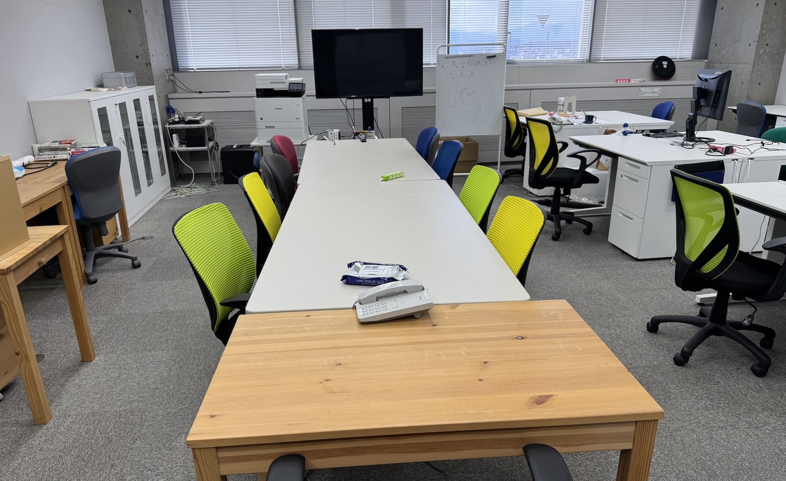
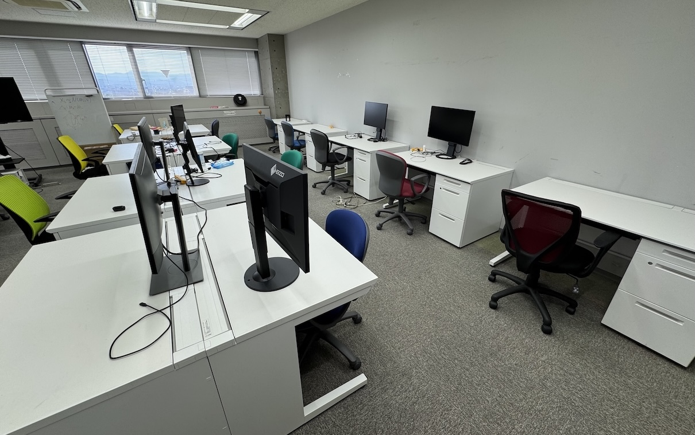
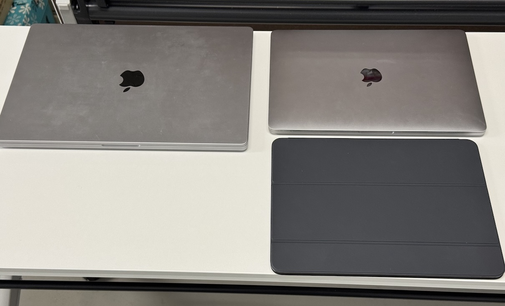
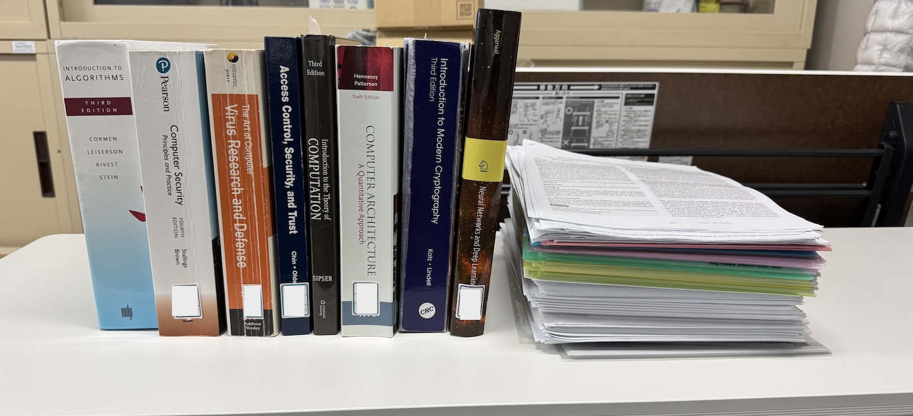

Lab Life
MacBook一台で世界に挑む、ハッカーたちの司令本部
研究室という場所は、単にPCを広げて作業をする空間でも恋愛をする場所ではありません。もしあなたが「研究室の隅で育まれる甘い恋」を期待しているなら、残念ながらその期待は、コンパイルエラーと共に虚空へ消えることになります。ここは、世界中の知性が集まるトップカンファレンスという戦場へ向かうための「司令本部」であり、妥協なき論理を研ぎ澄ます「聖域」です。最新のデバイスと広大な思考の空間、そして世界標準の教材（もしくはモニターの中の女性キャラクター）に恋をしてください。あなたが捧げた情熱に対して、セキュリティ技術は決してあなたを裏切ることはありません。
1. 80平米の思考の戦場

[憩いの場：ミーティングテーブルと巨大モニター]
広さ80平米。ここが私たちのメインフィールドです。巨大なモニターを備えた中央のテーブルでは、既存の知を疑い（既婚者なら奥さんの不倫さえも疑い）、新たな仮説をぶつけ合う「知的な格闘」が繰り返されます。
ここは単なる報告の場ではありません。トップカンファレンス採択という高い壁を越える戦略を練る「司令本部」です。それは計算や論理を超えた、教員と学生の深い信頼関係（Rapport）が奇跡を起こす場所でもあります。互いの情熱が共鳴した時、不可能と思えた「知の深淵」への扉が開かれます。
2. 境界なきワークスペース

[学生スペース：固定席のないオープンな光景]
当研究室に、あなたを固定する「専用の席」は存在しません。あるのは外部モニターだけが鎮座する13台の「聖なるオープンデスク」のみ。アーサー王の円卓に上座がないように、ここでも全ての席は平等であり、自由です。空いている席を自由に使ってください。
特定の場所に安住することを拒み、山の天気のように移り変わる女心の如く、常に思考を流動させる。 この身軽さ（アジリティ）こそが、変化の激しいコンピュータサイエンスの世界で生き残るための作法です。
3. 一人で巨人と戦うための「矛」

[研究機材：MacBook Pro と iPad]
世界と戦うために、重厚な大規模設備や高額な実験装置、ましてや母親のパンティー・ストッキングは必要ありません。 最新の MacBook Pro と iPad、そしてYouTubeアカウント。これだけで十分です。コンピュータサイエンスとはそういう分野です。
ノートパソコン一台と未知の世界へ飛び込む勇気を武器に、たった一人で巨大な知の障壁（Brick Walls）を穿つ。これこそが現代の武士道であり、知性というレバレッジの極致です。
4. 世界基準という「共通言語」

[知識の森：洋書のバイブルと英語論文の束]
私たちの戦場は常に世界です。デスクに積み上げられた洋書のバイブルと英語論文。一流研究者のコミュニティーにいることの喜びを噛み締め、世界中のトップ層と同じ言語で思考を研ぎ澄ませてください。
日本語で考えることを一度やめてください。 この洋書の厚みと論文の密度、そして「大成功してスケベなことがしたい」という下心が、あなたが「本物」として世界舞台へ立つための唯一の階段です。